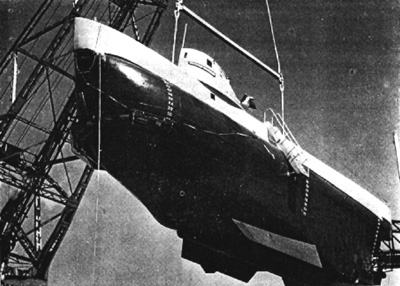

|
LE 27 FEVRIER I969 RECHERCHES DU S0US - MARIN "MINERVE" Le Service Presse-Information diffuse en pièce Jointe l'exposé prononcé le Vendredi 31 Janvier devant l'Académie de marine, par le Capitaine de Frégate SEVAISTRE de l'Etat-major de la Marine et destiné à faire le point actuel des recherches de l'épave de la "M I N E R V E" Le Capitaine de Vaisseau RIBUOT Chef du Service "Presse-Information" |
|||
|
La disparition
du sous-marin "MINERVE" connue dans la nuit du samedi 27 au dimanche
28 Janvier 1968 a vivement frappé l'opinion par son caractère dramatique.
Le 1èr Février, les recherches étaient interrompues, tout espoir ayant
disparu de retrouver des survivants. Mais il était du plus haut intérêt
de localiser l'épave, en examiner les débris afin de déterminer les
causes du sinistre. Ces causes pouvaient avoir. de très grosses conséquences
sur la mise en service et la conception du matériel des sous-marins
du même type, qu'ils soient en service dans la Marine Française ou
en cours de construction ou d'armement pour des Marines Etrangères.
Après
ce mouvement, le sous-marin avait fait route vers le Secteur T.65
situé au Sud du Cap SICIE ou il devait faire des exercices avec des
avions de la base aéronavale de NIMES-GARONS. C'est donc autour de
ce secteur que devaient se concentrer des recherches systématiques
et de longue haleine. Mais il était difficile de savoir s'il fallait
couvrir une zone plus grande que le secteur T.65 et de combien. Les
renseignements que l'on possédait le 1er février étaient assez maigres,
certains contradictoires. On peut les résumer de la façon suivante
: - il y avait très peu de chances pour que le Commandant soit sorti délibérément et de façon importante du secteur qui lui était attribué, bien qu'un samedi matin les secteurs voisins aient été libres. - à
07h55, le 27 janvier, la liaison radiophonie entre la MINERVE et le
BREGUET ATLANTIC avec lequel elle travaillait était interrompue sans
raison apparente. Les dernières paroles échangées étaient les suivantes
: La zone
couvrant des positions ou pouvait se trouver l'épave était donc étendue.
Elle englobait les secteur T.65 le secteur T.66 et leurs abords au
Sud et au Nord ainsi que toutes les routes allant de ces Secteurs
vers la côte et Toulon. Des renseignements extérieurs à la Marine
et inconnus pendant les recherches effectuées avant le 1er février
allaient cependant permettre de restreindre considérablement la zone
à explorer ou prescrite. Le dépouillement d'enregistrements effectués
par les stations sismologiques révélèrent en effet qu'à. 7 heures
59 minutes et 25 secondes, le 27 janvier, il s'était produit un phénomène
que l'on rapprocha de la disparition de la MINERVE .Une étude permit
de déterminer que ce phénomène correspondait à une explosion dont
la puissance était de l'ordre de grandeur de celle que produirait
à l'immersion de destruction d'un sous-marin type DAPHNE l'implosion
d'une bulle de 600 cubes de gaz à la pression atmosphérique. La localisation
qui pouvait on être déduite mettait le centre de la zone d'incertitude
très légèrement dans l'Est du Secteur T.65. Une
autre série a été effectuée pour chercher à améliorer la précision
de la position du point A (position donnée par les relevés
sismologiques ) en faisant exploser des grenades sous-marines très
puissantes. La position de l'aéronef était soumise elle aussi à une critique très serrée et donnait lieu à une légère rectification. Elle restait cependant assez incertaine. Pour la petite histoire, est-il bon d'ajouter que parmi les nombreux renseignements fournis par les radiesthésistes, un seul a semblé cohérent. Dès le 1er février cependant, l'Etat-major de la Marine entreprenait l'étude des moyens qu'il serait nécessaire d'utiliser pour mener des recherches poussées. Deux opérations menées par les américains donnèrent de précieux renseignements. Notons que la première concernait la recherche du sous-marin THRESHER disparu en avril 1963 près du rebord du plateau continental au Sud de la NOUVELLE ECOSSE, par des fonds de l'ordre de 1000 brasses. Cotte recherche avait donné lieu à deux campagnes, une. de cinq mois en 1965 et une de trois mois en 1964. La première campagne THRESHER avait immobilisé trois douzaines de navires et des milliers d'hommes. La deuxième opération avait été la recherche sur la côte espagnole de Méditerranée près de PALOMARES, d'une bombe nucléaire tombée à 1a mer à la suite de la collision survenue le 17 Janvier 1966 entre un bombardier et son avion ravitailleur. Cette bombe avait été récupérée 80 jours après l'accident par fond de 2850 pieds (soit environ 870 mètres) sur le talus du plateau continental. Dans le même ordre d'idées, nous avons su récemment que le sous-marin nucléaire SCORPION a été retrouvé par le navire spécialisé MISAR après qu'une localisation par une chaîne d'écoute de fonds ait considérablement restreint le champ des recherches mais nous n'avons pas encore de renseignements précis sur cette opération. Ces deux opérations américaines du THRESHER et de PALOMARES montraient que de telles recherches étaient très difficiles et demandaient d'énormes moyens, dont certains étaient très spécialisés. La Marine Nationale ne possédait évidemment que des moyens restreints, mais parmi ces moyens il y en avait qui répondaient, au moins partiellement, aux exigences de recherches par grands fonds en particulier le super-bathyscaphe ARCHIMEDE. Aussi était-il décidé de mener deux campagnes successives, une première en 1968 avec les moyens en notre possession, une autre, éventuelle en 1969, avec des moyens plus développés qu'il faudrait définir et financer. Il s'agit ici de décrire la campagne 1968. |
|||
|
 Le super-bathyscaphe ARCHIMEDE |
|||
|